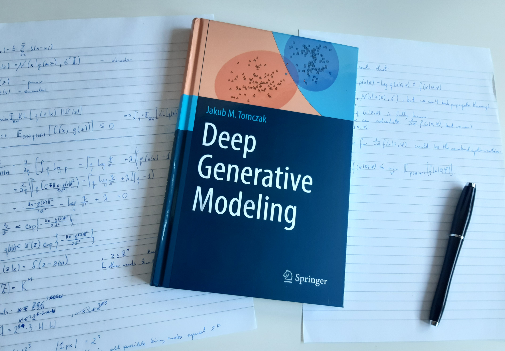

| Title: Deep Generative Modeling Author: Jakub M. Tomczak DOI: https://doi.org/10.1007/978-3-030-93158-2 Publisher: Springer Cham Code: github |
 |
This textbook tackles the problem of formulating AI systems by combining probabilistic modeling and deep learning. Moreover, it goes beyond typical predictive modeling and brings together supervised learning and unsupervised learning. The resulting paradigm, called deep generative modeling, utilizes the generative perspective on perceiving the surrounding world. It assumes that each phenomenon is driven by an underlying generative process that defines a joint distribution over random variables and their stochastic interactions, i.e., how events occur and in what order. The adjective "deep" comes from the fact that the distribution is parameterized using deep neural networks. There are two distinct traits of deep generative modeling. First, the application of deep neural networks allows rich and flexible parameterization of distributions. Second, the principled manner of modeling stochastic dependencies using probability theory ensures rigorous formulation and prevents potential flaws in reasoning. Moreover, probability theory provides a unified framework where the likelihood function plays a crucial role in quantifying uncertainty and defining objective functions.
Deep Generative Modeling is designed to appeal to curious students, engineers, and researchers with a modest mathematical background in undergraduate calculus, linear algebra, probability theory, and the basics in machine learning, deep learning, and programming in Python and PyTorch (or other deep learning libraries). It will appeal to students and researchers from a variety of backgrounds, including computer science, engineering, data science, physics, and bioinformatics, who wish to become familiar with deep generative modeling. To engage the reader, the book introduces fundamental concepts with specific examples and code snippets. The full code accompanying the book is available on github.
The ultimate aim of the book is to outline the most important techniques in deep generative modeling and, eventually, enable readers to formulate new models and implement them.